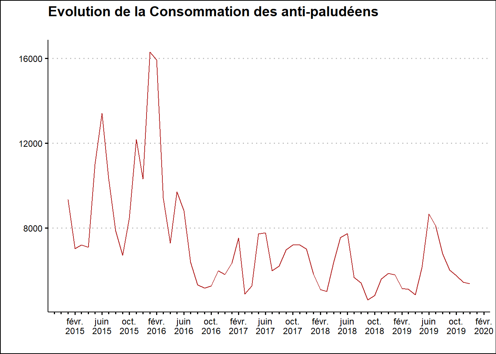
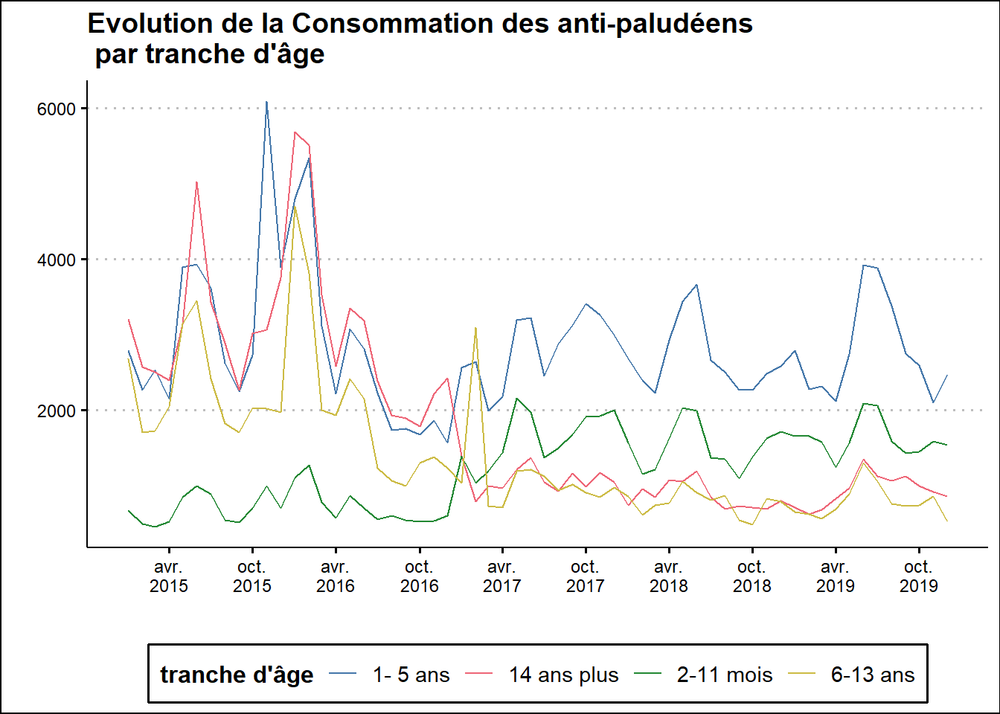

MEMOIRE DE PACIFIQUE
2021-09-14
Chapter 1 graphique de visualisation
bd <- read_excel("Inputs/bd.xlsx",sheet = "bd")
bd <- bd %>% mutate(date=ymd(date))1.1 Evolution de la Consommation des antipaludéens
bd_evol <- bd %>% group_by(date) %>% summarise(consommation=sum(consommation)) %>% ungroup()
bd_evol %>% ggplot()+
aes(x=date,y=consommation)+
geom_line(color="firebrick")+
scale_x_date(
date_labels = "%b\n%Y",
date_breaks = "4 months",
date_minor_breaks = "1 month",
guide = guide_axis_minor()
)+
labs(x="",y="",title = "Evolution de la Consommation des anti-paludéens\n")+
theme_clean()+
theme(
legend.position = "bottom"
) On peut facilement isoler ici deux périodes ,celle d’avant février 2016 et celle d’après où les tendances sont respectivement à la hausse puis à la baisse . Nous devons le confirmer par un test d’éxogénéité (en l’occurence de test snht) ## Test d’exogénéité pour la détection des valeurs de changement structurel
snht(bd_evol$consommation,period = 12,robust = T)## score leftMean rightMean
## 1 NA NA NA
## 2 NA NA NA
## 3 NA NA NA
## 4 NA NA NA
## 5 NA NA NA
## 6 NA NA NA
## 7 NA NA NA
## 8 NA NA NA
## 9 NA NA NA
## 10 NA NA NA
## 11 NA NA NA
## 12 NA NA NA
## 13 6.045446701 9221.872 7060.491
## 14 7.039182553 9688.542 6872.492
## 15 10.926357133 10565.167 6426.340
## 16 22.610992098 10636.255 6072.052
## 17 22.800629614 10655.355 6072.052
## 18 21.578995957 10524.198 6072.052
## 19 32.204563395 9728.744 6028.126
## 20 19.808277418 9399.560 6166.169
## 21 10.053625341 9402.921 6317.500
## 22 7.536532333 9323.554 6478.917
## 23 4.418694799 9274.590 6579.917
## 24 2.811802103 8330.891 6703.502
## 25 1.705861008 7637.072 6640.198
## 26 1.326743986 7060.491 6433.047
## 27 0.624066022 6872.492 6442.167
## 28 0.077073570 6426.340 6560.485
## 29 1.590036675 6072.052 6543.185
## 30 1.571864365 6072.052 6540.485
## 31 1.116476067 6072.052 6492.917
## 32 0.759484865 6028.126 6426.250
## 33 0.013732602 6166.169 6229.750
## 34 0.324503447 6317.500 6031.667
## 35 1.856524848 6478.917 5858.566
## 36 4.556613897 6579.917 5694.996
## 37 6.876311730 6703.502 5692.096
## 38 5.621814627 6640.198 5685.242
## 39 4.380502143 6433.047 5670.800
## 40 8.558277825 6442.167 5461.872
## 41 13.266888902 6560.485 5448.300
## 42 12.857368146 6543.185 5448.300
## 43 8.103328095 6540.485 5570.605
## 44 2.698543612 6492.917 5796.338
## 45 1.114248519 6426.250 5926.431
## 46 0.357458586 6229.750 5933.343
## 47 0.055044594 6031.667 5932.700
## 48 0.001933564 5858.566 5874.827
## 49 NA NA NA
## 50 NA NA NA
## 51 NA NA NA
## 52 NA NA NA
## 53 NA NA NA
## 54 NA NA NA
## 55 NA NA NA
## 56 NA NA NA
## 57 NA NA NA
## 58 NA NA NA
## 59 NA NA NA
## 60 NA NA NA1.2 Consommation des antipaludéens par tranche d’âge
bd %>% ggplot()+
aes(x=date,y=consommation,colour=tranche_age)+
scale_color_bright()+
geom_line()+
scale_x_date(
date_labels = "%b\n%Y",
date_breaks = "6 months",
date_minor_breaks = "6 month",
guide = guide_axis_minor()
)+
labs(x="",y="",title = "Evolution de la Consommation des anti-paludéens\n par tranche d'âge")+
guides(color=guide_legend(title="tranche d'âge"))+
theme_clean()+
theme(
legend.position = "bottom"
)